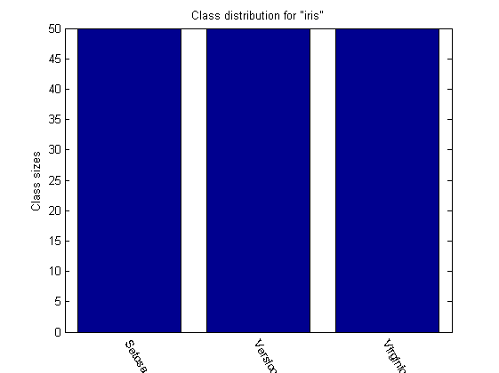
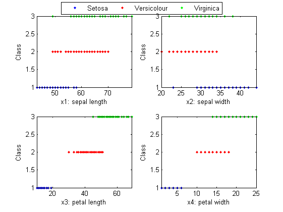
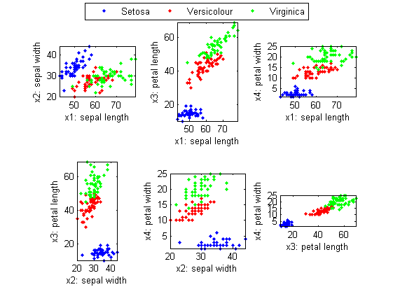
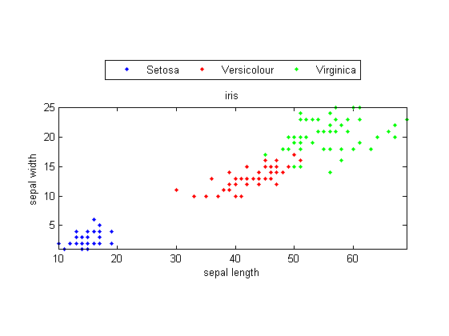
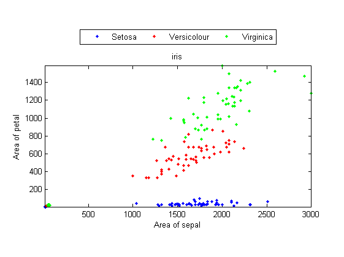

Visualization of the Iris Dataset
Iris dataset is by far the earliest and the most commonly used dataset in the literature of pattern recognition. The dataset contains 150 instances of iris flowers collected in Hawaii. These instances are divided into 3 classes of Iris Setosa, Iris Versicolour and Iris Virginica, based on 4 measures of sepal's width and length, and petal's width and length. These measures are taken for each iris flower, as shown next:

Detailed information of the dataset is listed next:
- 4 features with numerical values, including sepal length, sepal width, petal length, petal width (all in cm), with no missing data
- 3 classes, including Iris Setosa, Iris Versicolour, Iris Virginica
- data size: 150 entries
- data distribution: 50 entries for each class
In the dataset, Iris Setosa is easier to be distinguished from the other two classes, while the other two classes are partially overlapped and harder to be separated.
Contents
Class size distribution
We can display the data distribution among all classes, as follows:
DS=prData('iris');
[classSize, classLabel]=dsClassSize(DS, 1);
4 features 150 instances 3 classes
Plots of Classes vs. features
We can plot the classes w.r.t. each of the features:
DS = prData('iris');
dsProjPlot1(DS);
 2D scatter plot
We can have a scatter plot after projecting the dataset onto a 2D plane:
DS = prData('iris');
dsProjPlot2(DS);
 Projection to 2 of the most separated features
From the above plot, it seems that the projection over features 3 and 4 can separate the classes most appropriately. If we need to identify a point in the scatter plot, we need to put annotation to each data point first. Then when we draw the mouse near a specific data point, the corresponding annotation will appear. The next example demonstrate how to achieve this. Please move the cursor to any point to see the corresponding annotation.
clf; DS=prData('iris'); DS.input=DS.input(3:4, :); for i=1:length(DS.output) DS.annotation{i}=sprintf('Data index=%d, class=%s', i, DS.outputName{DS.output(i)}); end opt.showAnnotation=1; opt.showLegend=1; dsScatterPlot(DS, opt);
Feature combination
In fact, the area of sepals and petals is an effective feature for classifying three species of iris. We can use the multiplication of sepal's width and length as the area of the sepal. And similar for petal. We can then use these area-based features to have the scatter plot, as follows:
DS=prData('iris'); DS.input=[DS.input(1,:).*DS.input(2,:); DS.input(3,:).*DS.input(4,:)]; DS.inputName=''; DS.inputName{1}='Area of sepal'; DS.inputName{2}='Area of petal'; dsScatterPlot(DS);
3D scatter plot
From the plot, it is obvious that Setosa is quite separated from the other two classes, while the other two classes have partial overlap at their boundaries.
We can have another scatter plot after projecting the dataset onto a 3D space:
DS = prData('iris');
dsProjPlot3(DS);

Basically, we can only visualize data points scattered in a 2D plane or a 3D space. If we want to visualize data points in a 4D space, then the fourth feature can be viewed as the time and the other three features becomes moving points in a 3D space.
Copyright 2011-2012 Jyh-Shing Roger Jang.